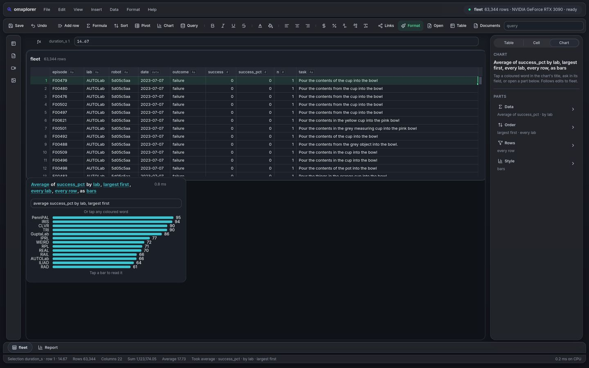
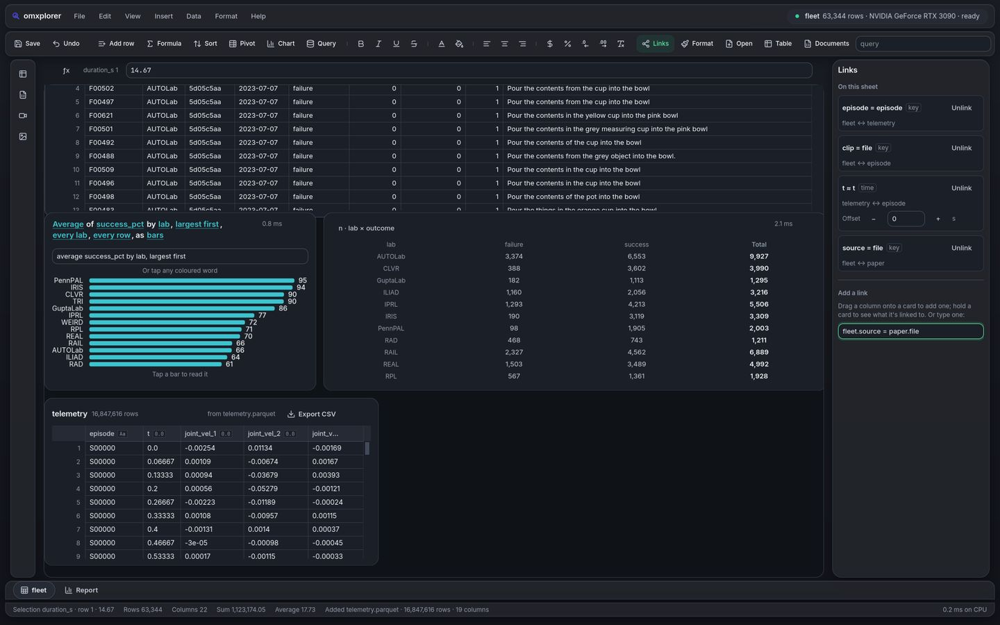
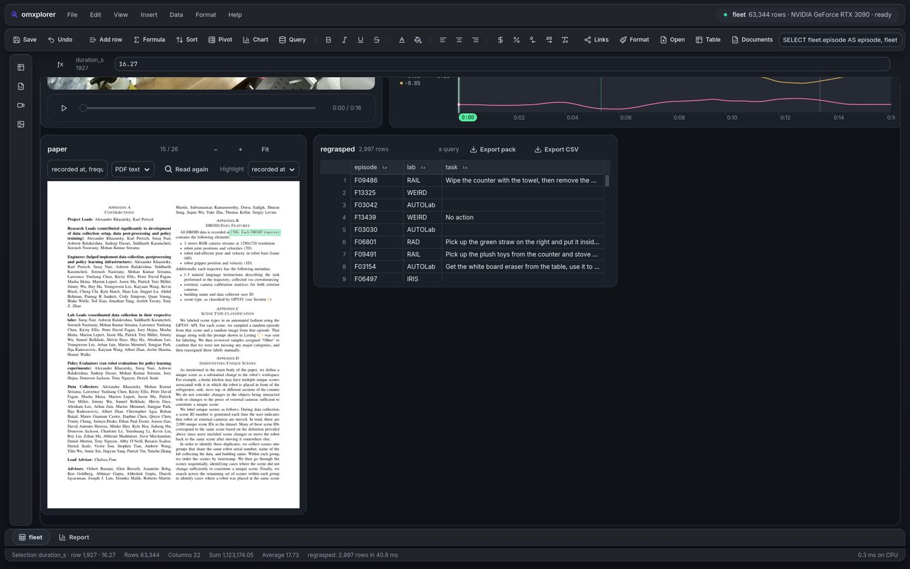
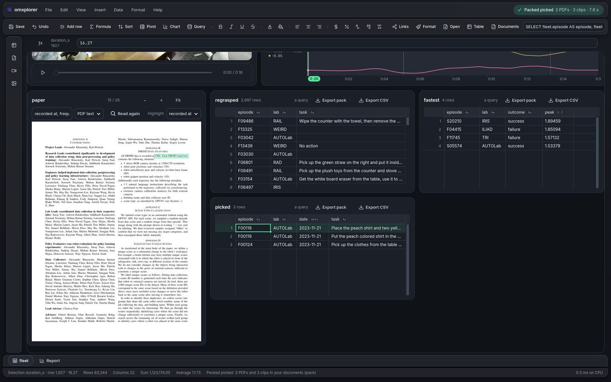

Live · real data
Why did the robot drop it? One sheet, its video, its telemetry, its paper.
The whole fleet is a spreadsheet you touch: 63,344 real episodes from 13 labs (DROID, CC-BY-4.0), pivots and charts from a sentence. Ask in words over all 16.8M telemetry rows in about 40 ms, with no Python and no server, then tap an answer: its video and telemetry open on one cursor, its documents linked.







What the data doesn't support: DROID has no force or torque, so "dropped" is read from the gripper and the video; the per-episode gripper features don't predict failure across labs, so they're filters, not a detector · omxcode docs/goals/47-report.md